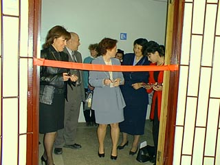

|
|
April 3rd, 2003 - Opening of the Window on America
Center
On April 4th, 2003, Window on America resource center was
opened at the Crimean State University of Industry and Pedagogy.
The center was opened and financed by the US Embassy in Ukraine.
The Deputy Chief of Mission, Marie Yovanovitch, cultural attaché,
Scott Urbom, representative of NGO’s from Simferopol, and
students from the University, attended the opening ceremony.
|
|  |
The center was officially opened by the Deputy Chief of Mission,
Marie Yovanovitch. In her opening speech, Ms. Yovanovitch
spoke about providing access to information about the US through
Window on America information centers in Ukraine. Ms. Yovanovitch
further spoke about how this center will provide information
about US history, culture, politics and education. At the
end of her speech, Ms. Yovanovitch wished everyone luck and
success in working in the center in Crimea.
|
The opening program also included a photo exhibit by a
Peace Corps volunteer, Richard Krauze, “Ukraine through
the eyes of an American Peace Corps Volunteer,” and a CD
by Ilya Bahkshisha “Culture of Crimean Tatars,” who also
participated with the help of the US Embassy in Ukraine.
The center is equipped with computers with access to the
Internet along with video, audio, and copying equipment.
A wonderful collection of manuals and encyclopedias, books
about the life of prominent historic personalities and American
writers, American and world literature books in English,
videos on different topics, reference software, and audio
tapes to learn the English language are also part of the
many resources of the Window on America center.
|
|
|